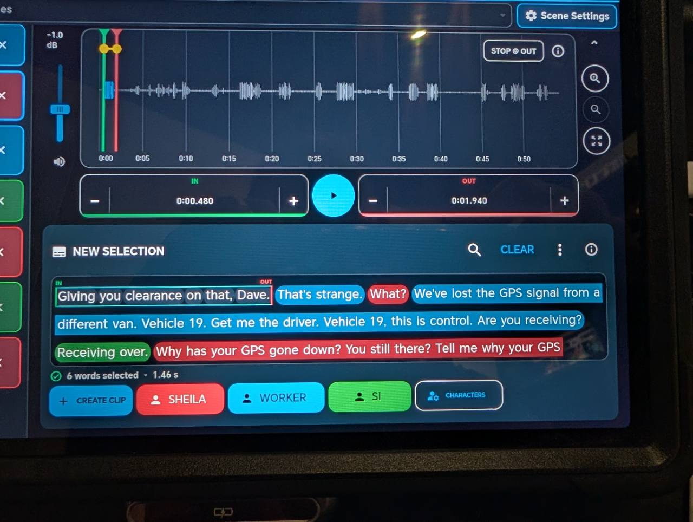
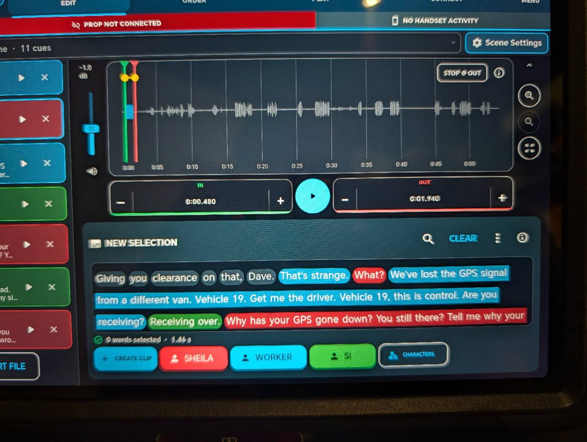

An incoming call during dialogue
The operator rings the prop on cue. The actor answers and the screen follows the configured call sequence.
Built for production
CueLatch brings audio playback and interactive prop-phone cues into one practical system for film and television crews.
Contact CueLatch
 Real app screens
Real app screens
How CueLatch works
CueLatch can run prop-phone action, production audio, or both together. Choose only what the scene needs.


01 / Prop Device
Turn an Android handset into a controlled on-camera phone. Trigger believable calls, messages and screen action from another phone, tablet or computer.
Set the caller, message, alert behaviour and screen appearance.
See which device is ready, synced and selected for the next cue.
Send the same action to multiple props, or target a specific handset.
The operator rings the prop on cue. The actor answers and the screen follows the configured call sequence.
A believable notification appears when the director calls for it—not when a real network happens to deliver it.
Select one handset, a group, or every connected device before triggering the cue.
02 / Audio Cues
Import source audio, work from its waveform or transcript, and turn exact selections into clearly ordered playback cues.
Use the waveform directly or make spoken material searchable by words.
Set precise in and out points, label speakers and create only the clips needed.
Order, trigger, pause, fade and stop cues without returning to the edit view.
Prepare exact lines from a longer recording and place them in the order required by the scene.
Keep short effects and prompts clearly labelled for fast, repeatable playback between takes.
Run playback locally while phone actions are sent to the selected prop devices from the same project.
Private testing
We are working with a small group of production professionals while we refine the experience.